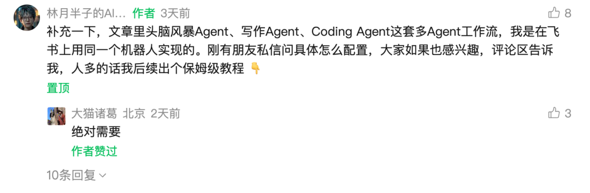
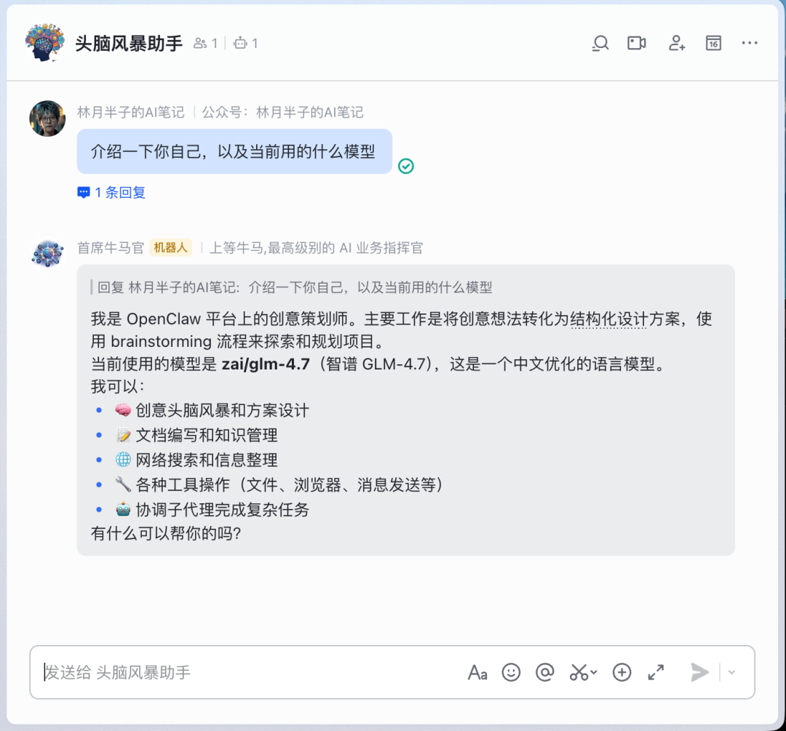
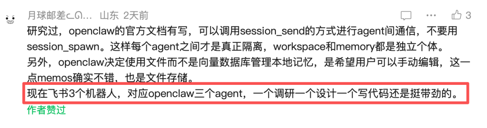
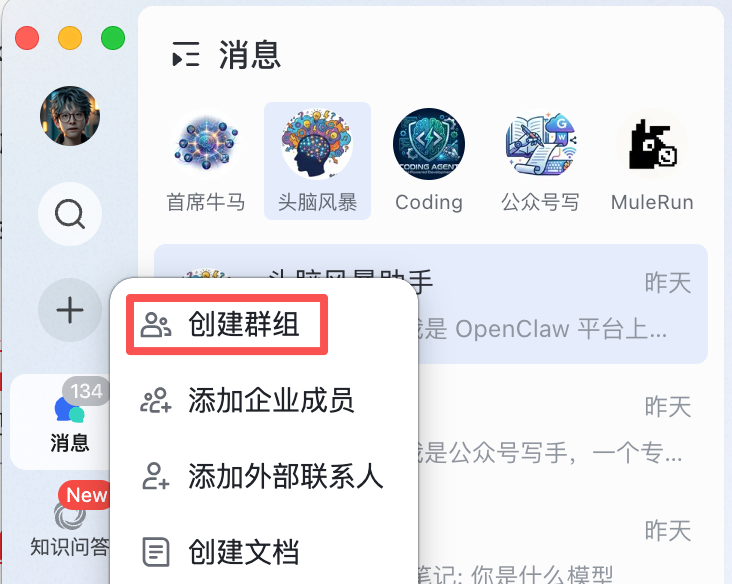
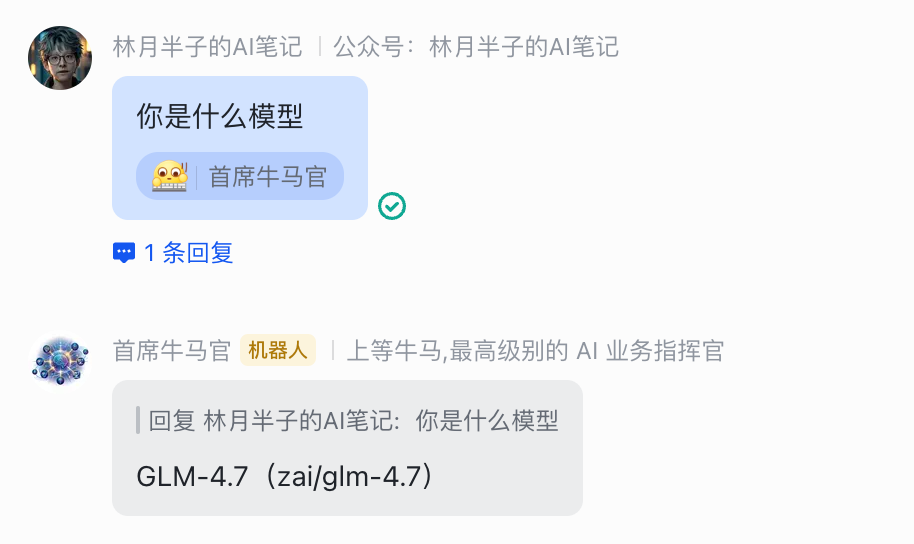
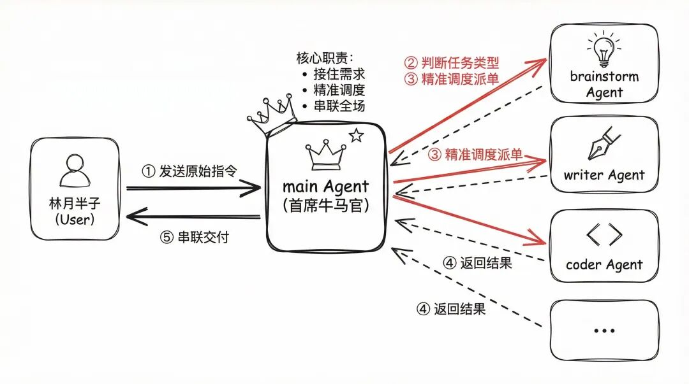
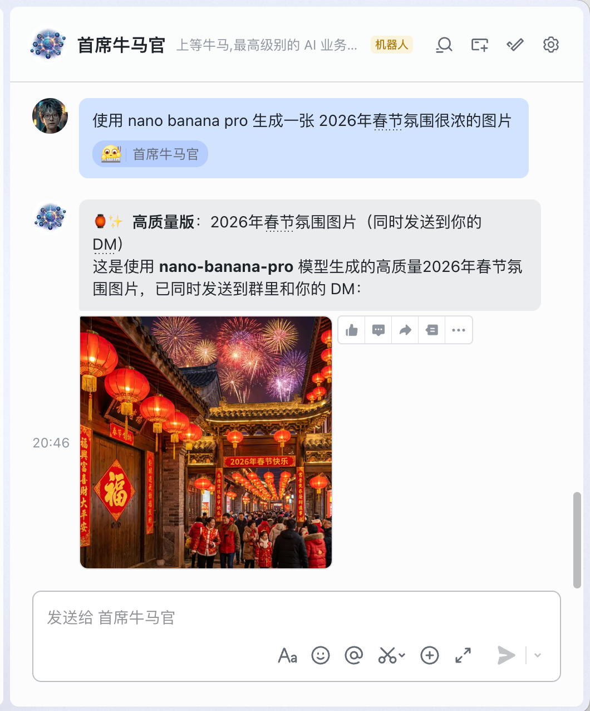

上一篇文章《我的 OpenClaw Token 账单降了 72%，只因装了这个插件》，我的本意是教大家怎么减少 Token 消耗，结果评论区和后台的画风全是：
“你那个多 Agent 到底是怎么配出来的？”
“飞书不同群对应不同人格是怎么实现的？”

看来大家对省钱只是基础需求，对搞个 AI 团队才是真爱。既然大家最感兴趣，那今天我就把实操逻辑全盘托出。
为什么需要 Multi Agent？
我发现很多群友在使用 OpenClaw 时，都是“一号通吃”：写文案、改代码、生图全在一个主 Agent 里搞定。
这样做的坏处显而易见：
- 1.记忆负担：时间久了，主 Agent 的记忆文件（USER.md, memory/等）会变得极其臃肿。
- 2.神经错乱：当你让它写公众号时，它可能会联想到你昨天改过的代码逻辑。上下文污染会导致 AI 响应变慢，甚至逻辑打架。
- 3.成本高昂：每次对话，它都要读取大量无关的背景资料。
所以，我的方案是：单 Gateway 模式 + 同一个 Bot + 不同飞书群组 = 物理隔离的专家团队。
也相当于你给大龙虾设置了无限的分身。
这并不是简单地把同一个机器人拉进不同的群，而是让每个群里的 Bot 虽然看起来是同一个，但底层连接着不同的 Agent、独立的工作区，甚至不同的模型。
比如：头脑风暴助手群我配了 glm-4.7，利用它强大的中文创意能力；而公众号写手群我配了 deepseek，追求极致的性价比和逻辑输出。
同一个机器人，在不同群里，换个脑子干活。

每只🦞都有自己的办公室、记忆和会话，完全隔离。但它们又能通过“内线电话”互相协作。这就是 OpenClaw 多 Agent 模式的魅力。
两种流派：分身术 vs 独立团
有硬核网友在上一篇文章评论：

没错，OpenClaw 的灵活性就在这里。
那么到底是搞一个机器人好，还是搞一堆机器人好？
- 分身流 (本文重点)： 飞书里就一个 Bot，但你把它拉进不同的群，通过 bindings 路由，它就自动变成不同的“大脑”。优点： 配置简单，适合追求效率的个人用户。
- 独立团 (硬核玩家方案)： 为调研、设计、代码分别创建独立的飞书机器人。优点： 角色感极强，每个机器人的头像、名字在所有群里都是固定的，完全符合多实体协作的直观感受。
无论你选哪种，底层都是 OpenClaw 的多 Agent 隔离机制。有兴趣挑战多 Bot 的可以去翻翻飞书插件的 PR: https://github.com/m1heng/clawdbot-feishu/pull/137。
它支持了飞书多机器人的接入。
本文以飞书为例来演示，但 OpenClaw 支持的渠道不止于此，Telegram、Discord 同样可以接入，玩法完全相通。关于飞书的基础配置，我之前写过一篇详细教程，没配过的可以先去看那篇打底。
今天我们先拆解最适合个人、门槛最低的单 Bot 路由模式。
核心思路：单 Gateway 模式
对于我们个人日常使用，我建议用 单 Gateway 模式 就够了。它能利用 bindings 功能实现“一号多用”，体验最丝滑，管理也最简单。
在动手配置前，先同步一个概念：在 OpenClaw 中，一个 Agent 不只是一个名字，它是一个独立的“虚拟员工”，拥有自己的：
- Workspace (工作区)：它的个人办公室（文件、SOUL.md、提示词）。
- AgentDir (状态目录)：它的身份证（认证信息、模型配置）。
- Sessions (会话存储)：它的私人记忆（独立的聊天记录，不跟别人串味）。
这种隔离，才是我们能把任务“拆包”给不同人做、从而节省 Token 并防止“大脑宕机”的根本原因。
# OpenClaw Agent 配置目录
~/.openclaw/agents/video_image_creator/
├── agent/ # Agent 配置文件夹
│ ├── auth-profiles.json # 认证配置
│ └── models.json # 模型配置
└── sessions/ # 会话记录
├── 40ce6280-0a92-4...128976da10e.jsonl
├── 69812592-0515-4...fdcc1f228c0d.jsonl
└── sessions.json
# Agent 工作目录(workspace)
~/.openclaw/workspace-video_image_creator/
├── .git/
├── AGENTS.md # Agent 文档
├── BOOTSTRAP.md # 启动文档
├── HEARTBEAT.md # 心跳监控文档
├── IDENTITY.md # Agent 身份定义
├── PROMPT.md # 提示词模板
├── SOUL.md # Agent 灵魂/个性定义
├── TOOLS.md # 工具使用文档
├── USER.md # 用户信息
└── memory/ # 记忆存储实操配置
Step 1. 通过命令行添加新 Agent
这是最简单的方法。你可以使用内置的向导来创建一个隔离的 Agent：
openclaw agents add work \
--model zai/glm-4.7 \
--workspace ~/.openclaw/workspace-work这会自动在配置文件中创建一个名为 work 的新 Agent。
员工招募进来了，办公室（Workspace）也分好了，接下来得给它发一张显眼的“工牌”，好让我们在飞书群里一眼认出它。
openclaw agents set-identity --agent work --name "全能小秘书" --emoji "🤖"Step 2. 编写“入职材料”，把 AI 捏出灵魂
在每个 Agent 的独立工作区（Workspace）下，我强烈建议配置 SOUL.md、AGENTS.md 和 USER.md。如果说命令行给了 Agent 身体，那么这些文件就赋予了它大脑和记忆。
这种基于文件的管理方式，不仅让 AI 的表现更稳定、可控，也让你的自动化工作流真正具备了‘专业直觉’。
大家可以根据自己的 ID 来灵活调整。比如你建的是 coder，那 SOUL.md 就要写得像个资深程序员；我建的是 work，所以它就是我的全能管家。
Step 3.将 Agent 和通信渠道绑定
首先我们需要在飞书建一个群组，然后添加群机器人

最重要的是需要拿到群会话 ID
打开 openclaw.json追加路由，在 bindings 数组中添加你的飞书群组规则：
{
"bindings": [
{
"agentId": "work",
"match": {
"channel": "feishu",
"peer": {
"kind": "group",
"id": "oc_d46347c35dd403daad7e5df05d08a890"
}
}
}
]
}实际上我们现在已经配置好了这个 Agent 分身了。
但是现在我们在群里必须@这个机器人，才会给到我们回复，如果不加的话，它是给不到我回复的。
如果你想像和真人聊天一样，不用每次都艾特机器人，那就必须把 requireMention 设为 false。这样，这个群就变成了你和该 Agent 的专属私人办公室。
{
"channels":{
"feishu":{
"enabled":true,
"appId":"cli_a9f21xxxxx89bcd",
"appSecret":"w6cPunaxxxxBl1HHtdF",
"domain":"feishu",
"connectionMode":"websocket",
"dmPolicy":"allowlist",
"allowFrom":[
"ou_f0ad95cf147949e7f30681a879a5f0d3"
],
"groupPolicy":"open",
"groups":{
"oc_d46347c35dd403daad7e5df05d08a890":{
"requireMention":false
},
"oc_598146241198039b8d9149ded5fb390b":{
"requireMention":false
},
"oc_b1c331592eaa36d06a05c64ce4ecb113":{
"requireMention":false
}
}
}
}
}另外需要同时开放飞书权限：im:message.group_msg，两者配合一起才有效果。

Agent 之间如何通信
很多小伙伴觉得多 Agent 就是各干各的，其实不然。多 Agent 模式的核心意义在于：安排一个 Agent 负责监督，当其他执行任务的 Agent 卡住或出错时，监督者能及时介入进行修复工作，确保流程不至于中断。
有了各司其职的专家，接下来最关键的就是让它们协作起来。在我的系统里，机器人首席牛马官的背后，其实是一个严密的组织架构。

首席牛马官：你的 AI 部门主管
我设定了一个名为 main（首席牛马官） 的主 Agent。 它的核心职责不是自己埋头干活，而是“接单”与“派单”：
- 接住需求：它负责直接对接我（林月半子）的所有原始指令。
- 精准调度：它会判断任务类型，然后像主管一样喊对应的 Agent 起来干活。比如让 brainstorm 去做头脑风暴，让 writer 去写公众号文章，或者让 coder 去写代码。
- 串联全场：它是整个流程的指挥官，负责把各个环节串联起来，确保任务不掉链子。
核心机制：sessions_send
Agent 之间相互通信并不是靠大声喊，而是通过 OpenClaw 内置的 sessions_send 工具实现的。 简单理解，这就是它们之间的“内线电话”。
硬核配置：开启 agentToAgent
要让“内线电话”打得通，你必须在配置文件里给它们开通权限。这涉及到 agentToAgent 的关键配置：
- 1.必须启用：首先要将 enabled 设置为 true。
- 2.设置白名单：在 allow 列表里明确规定谁能跟谁说话。
比如，我想让我的首席牛马官（main）能够指挥专门负责生图的 mulerun以及其他agent，配置如下：
{
"tools":{
"agentToAgent":{
"enabled":true,
"allow":[
"main",
"mulerun",
"brainstorm",
"writer",
"coder"
]
}
}
}通过这种配置，首席牛马官就获得了给 mulerun 下达指令的权限。 这样，复杂的任务就会被拆解并在专家之间流转，而你只需要在飞书里对“首席牛马官”发号施令即可。

写在最后
搞定了多 Agent 架构，你手里已经握着一支随时待命的 AI 军队了。但要让这支军队真正产生战斗力，重点不在于堆砌模型，而在于你作为“架构师”的组织设计。
AI 时代，一个人就是一支军队。 我一直认为，与其强求一个 AI 像超人一样无所不能，不如像组建公司一样，设计出最适合你的团队协作模式。
在我的设想里，你的“牛马团队”可以进化出以下几种高级阵法：
- 线性流水线：前置 Agent 交付，后置 Agent 接力。比如：调研员 挖深度资料 ->写手 出初稿 -> 校审官 降噪纠错。
- 依赖并行：复杂任务拆解，多路齐头并进。比如：架构师 定大框架，后端 和 前端 专家同时开工，最后交给 质量监督 统一把关。
我很好奇，你的牛马团队目前是怎么分工的？
是打算搭建一套高效的流水线，还是设计一个复杂的并行阵法？
欢迎在评论区晒出你的 Agent 配置清单或协作构想！ 让我们一起看看，谁才是最硬核的AI 架构师！
看到这里，你大概已经知道多 Agent 能干什么了。
下一步是你自己跑起来。
如果卡住了，或者想少走弯路，后台找我，我自己从搭环境到落地跑了一遍。
另外我和大牛一起组建了 「OpenClaw 小龙虾实战交流群」，99元/人。
感兴趣的都可以进来，后续会持续分享实战玩法和配置方案。付费是为了筛掉凑热闹的，留下真正在跑的人。
感兴趣的私信我，备注「龙虾」。

感谢看到这里 👏
觉得有用的话，点赞 👍 / 在看 👀 / 转发 🫱 / 评论 📣
星标 ⭐ 一下，下次更新不迷路